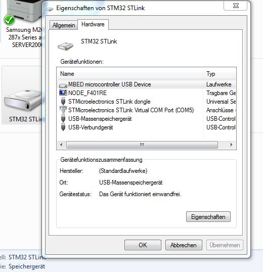
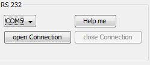
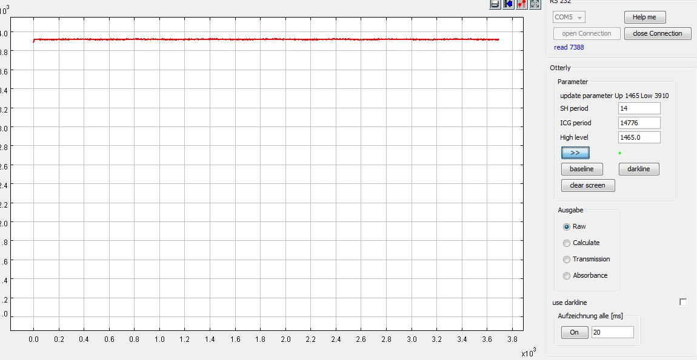

After connecting the Nucleoboard to the Computer you see under Devices and Printers (Windows 7) something like this:
If there is no COM-Port displayed check STMicroelectronics for STM32 Virtual COM Port Driver.
Select the displayed COM Port from the dropdown list and open the Device
Now hit the >> Button and you should see somethong like this
